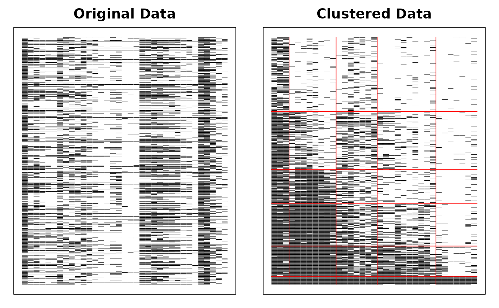
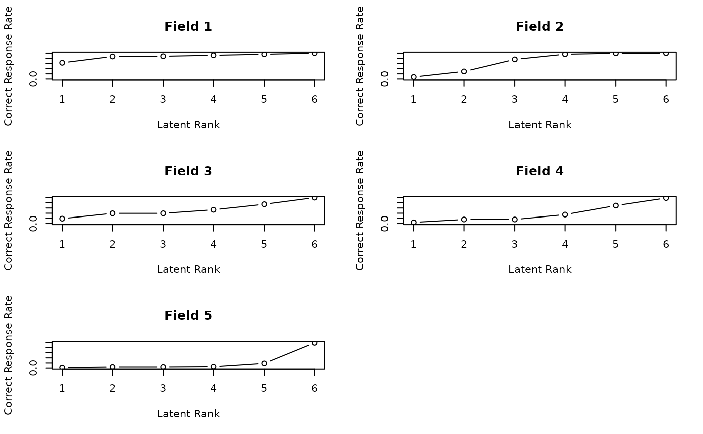
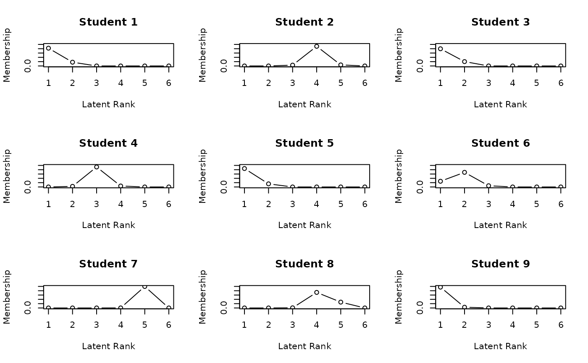

Biclustering and Ranklustering Analysis
Source:R/07_Biclustering.R, R/15_Biclustering_nominal.R, R/16_Biclustering_ordinal.R
Biclustering.RdPerforms biclustering, ranklustering, or their confirmatory variants on binary response data. These methods simultaneously cluster both examinees and items into homogeneous groups (or ordered ranks for ranklustering). The analysis reveals latent structures and patterns in the data by creating a matrix with rows and columns arranged to highlight block structures.
Usage
Biclustering(U, ...)
# Default S3 method
Biclustering(U, na = NULL, Z = NULL, w = NULL, ...)
# S3 method for class 'binary'
Biclustering(
U,
ncls = 2,
nfld = 2,
method = "B",
conf = NULL,
mic = FALSE,
maxiter = 100,
verbose = TRUE,
beta1 = 1,
beta2 = 1,
...
)
# S3 method for class 'nominal'
Biclustering(
U,
ncls = 2,
nfld = 2,
conf = NULL,
mic = FALSE,
maxiter = 100,
verbose = TRUE,
alpha = 1,
...
)
# S3 method for class 'ordinal'
Biclustering(
U,
ncls = 2,
nfld = 2,
method = "B",
conf = NULL,
mic = FALSE,
maxiter = 100,
verbose = TRUE,
alpha = 1,
...
)Arguments
- U
Either an object of class "exametrika" or raw data. When raw data is given, it is converted to the exametrika class with the
dataFormatfunction.- ...
Additional arguments passed to specific methods.
- na
Values to be treated as missing values.
- Z
Missing indicator matrix of type matrix or data.frame. Values of 1 indicate observed responses, while 0 indicates missing data.
- w
Item weight vector specifying the relative importance of each item.
- ncls
Number of latent classes/ranks to identify (between 2 and 20).
- nfld
Number of latent fields (item clusters) to identify.
- method
Analysis method to use (character string):
"B" or "Biclustering": Standard biclustering (default)
"R" or "Ranklustering": Ranklustering with ordered class structure
- conf
Confirmatory parameter for pre-specified field assignments. Can be either:
A vector with items and corresponding fields in sequence
A field membership profile matrix (items × fields) with 0/1 values
NULL (default) for exploratory analysis where field memberships are estimated
- mic
Logical; if TRUE, forces Field Reference Profiles to be monotonically increasing. Default is FALSE.
- maxiter
Maximum number of EM algorithm iterations. Default is 100.
- verbose
Logical; if TRUE, displays progress during estimation. Default is TRUE.
- beta1
Beta distribution parameter 1 for prior density of field reference matrix. Default is 1.
- beta2
Beta distribution parameter 2 for prior density of field reference matrix. Default is 1.
- alpha
Dirichlet distribution concentration parameter for prior density of field reference probabilities. Default is 1.
Value
An object of class "exametrika" and "Biclustering" containing:
- model
Model type indicator (1 for biclustering, 2 for ranklustering)
- msg
A character string indicating the model type.
- mic
Logical value indicating whether monotonicity constraint was applied
- testlength
Number of items in the test
- nobs
Number of examinees in the dataset
- Nclass
Number of latent classes/ranks specified
- Nfield
Number of latent fields specified
- N_Cycle
Number of EM iterations performed
- converge
Logical value indicating wheter the algorithm converged within maxiter iterasions
- LFD
Latent Field Distribution - counts of items assigned to each field
- LRD/LCD
Latent Rank/Class Distribution - counts of examinees assigned to each class/rank
- FRP
Field Reference Profile matrix - probability of correct response for each field-class combination
- FRPIndex
Field Reference Profile indices (Kumagai, 2007) — data.frame with 6 columns:
- Alpha
Maximum-slope location: class transition where the largest increase occurs
- A
Maximum slope: largest consecutive-class difference in the profile
- Beta
Location parameter: class whose FRP value is closest to 0.5
- B
FRP value at the Beta position
- Gamma
Non-monotonicity ratio: proportion of class transitions that decrease
- C
Monotonicity violation: sum of negative consecutive-class differences (C=0 means perfectly monotone)
For binary data, computed directly from the FRP matrix (correct response rates). For ordinal data, computed from normalized expected scores: (E[score]-1)/(maxQ-1), which maps expected scores from [1, maxQ] to [0, 1] for comparability with the binary case. Not computed for nominal data (no natural category ordering).
- TRP
Test Reference Profile - expected score for examinees in each class/rank
- CMD/RMD
Class/Rank Membership Distribution - sum of membership probabilities across examinees
- FieldMembership
Matrix showing the probabilities of each item belonging to each field
- ClassMembership
Matrix showing the probabilities of each examinee belonging to each class/rank
- SmoothedMembership
Matrix of smoothed class membership probabilities after filtering
- FieldEstimated
Vector of the most likely field assignments for each item
- ClassEstimated
Vector of the most likely class/rank assignments for each examinee
- Students
Data frame containing membership probabilities and classification information for each examinee
- FieldAnalysis
Matrix showing field analysis results with item-level information
- TestFitIndices
Model fit indices for evaluating the quality of the clustering solution
- SOACflg
Logical flag indicating whether Strongly Ordinal Alignment Condition is satisfied
- WOACflg
Logical flag indicating whether Weakly Ordinal Alignment Condition is satisfied
Details
Biclustering simultaneously clusters both rows (examinees) and columns (items) of a data matrix. Unlike traditional clustering that groups either rows or columns, biclustering identifies submatrices with similar patterns. Ranklustering is a variant that imposes an ordinal structure on the classes, making it suitable for proficiency scaling.
The algorithm uses an Expectation-Maximization approach to iteratively estimate:
Field membership of items (which items belong to which fields)
Class/rank membership of examinees (which examinees belong to which classes)
Field Reference Profiles (probability patterns for each field-class combination)
The confirmatory option allows for pre-specified field assignments, which is useful when there is prior knowledge about item groupings or for testing hypothesized structures.
References
Shojima, K. (2012). Biclustering of binary data matrices using bilinear models. Behaviormetrika, 39(2), 161-178.
Examples
# \donttest{
# Perform Biclustering with Binary method (B)
# Analyze data with 5 fields and 6 classes
result.Bi <- Biclustering(J35S515, nfld = 5, ncls = 6, method = "B")
#> Biclustering is chosen.
#>
iter 1 log_lik -7966.66
#>
iter 2 log_lik -7442.38
#>
iter 3 log_lik -7266.35
#>
iter 4 log_lik -7151.01
#>
iter 5 log_lik -7023.94
#>
iter 6 log_lik -6984.82
#>
iter 7 log_lik -6950.27
#>
iter 8 log_lik -6939.34
#>
iter 9 log_lik -6930.89
#>
iter 10 log_lik -6923.5
#>
iter 11 log_lik -6914.56
#>
iter 12 log_lik -6908.89
#>
iter 13 log_lik -6906.84
#>
iter 14 log_lik -6905.39
#>
iter 15 log_lik -6904.24
#>
iter 16 log_lik -6903.28
#>
iter 17 log_lik -6902.41
#>
iter 18 log_lik -6901.58
#>
iter 19 log_lik -6900.74
#>
iter 20 log_lik -6899.86
#>
iter 21 log_lik -6898.9
#>
iter 22 log_lik -6897.84
#>
iter 23 log_lik -6896.66
#>
iter 24 log_lik -6895.35
#>
iter 25 log_lik -6893.92
#>
iter 26 log_lik -6892.4
#>
iter 27 log_lik -6890.85
#>
iter 28 log_lik -6889.32
#>
iter 29 log_lik -6887.9
#>
iter 30 log_lik -6886.66
#>
iter 31 log_lik -6885.67
#>
iter 32 log_lik -6884.98
#>
iter 33 log_lik -6884.58
#>
#> No ID column detected. All columns treated as response data. Sequential IDs (Student1, Student2, ...) were generated. Use id= parameter to specify the ID column explicitly.
# Perform Biclustering with Rank method (R)
# Store results for further analysis and visualization
result.Rank <- Biclustering(J35S515, nfld = 5, ncls = 6, method = "R")
#> Ranklustering is chosen.
#>
iter 1 log_lik -8097.56
#>
iter 2 log_lik -7669.21
#>
iter 3 log_lik -7586.72
#>
iter 4 log_lik -7568.24
#>
iter 5 log_lik -7561.02
#>
iter 6 log_lik -7557.34
#>
iter 7 log_lik -7557.36
#>
#>
#> Strongly ordinal alignment condition was satisfied.
#> No ID column detected. All columns treated as response data. Sequential IDs (Student1, Student2, ...) were generated. Use id= parameter to specify the ID column explicitly.
# Display the Bicluster Reference Matrix (BRM) as a heatmap
plot(result.Rank, type = "Array")

# Plot Field Reference Profiles (FRP) in a 2x3 grid
# Shows the probability patterns for each field
plot(result.Rank, type = "FRP", nc = 2, nr = 3)

# Plot Rank Membership Profiles (RMP) for students 1-9 in a 3x3 grid
# Shows posterior probability distribution of rank membership
plot(result.Rank, type = "RMP", students = 1:9, nc = 3, nr = 3)

# Example of confirmatory analysis with pre-specified fields
# Assign items 1-10 to field 1, 11-20 to field 2, etc.
field_assignments <- c(rep(1, 10), rep(2, 10), rep(3, 15))
result.Conf <- Biclustering(J35S515, nfld = 3, ncls = 5, conf = field_assignments)
#> Biclustering is chosen.
#> Confirmatory Clustering is chosen.
#>
iter 1 log_lik -9313.35
#>
iter 2 log_lik -9217.19
#>
iter 3 log_lik -9178.54
#>
iter 4 log_lik -9138.03
#>
iter 5 log_lik -9107.34
#>
iter 6 log_lik -9093
#>
iter 7 log_lik -9087.76
#>
iter 8 log_lik -9085.83
#>
iter 9 log_lik -9085.01
#>
#>
#> Weakly ordinal alignment condition was satisfied.
#> No ID column detected. All columns treated as response data. Sequential IDs (Student1, Student2, ...) were generated. Use id= parameter to specify the ID column explicitly.
# }
# \donttest{
# Perform Biclustering for nominal sample data()
# Analyze data with 5 fields and 6 classes
result.Bi <- Biclustering(J35S515, nfld = 5, ncls = 6, method = "B")
#> Biclustering is chosen.
#>
iter 1 log_lik -7966.66
#>
iter 2 log_lik -7442.38
#>
iter 3 log_lik -7266.35
#>
iter 4 log_lik -7151.01
#>
iter 5 log_lik -7023.94
#>
iter 6 log_lik -6984.82
#>
iter 7 log_lik -6950.27
#>
iter 8 log_lik -6939.34
#>
iter 9 log_lik -6930.89
#>
iter 10 log_lik -6923.5
#>
iter 11 log_lik -6914.56
#>
iter 12 log_lik -6908.89
#>
iter 13 log_lik -6906.84
#>
iter 14 log_lik -6905.39
#>
iter 15 log_lik -6904.24
#>
iter 16 log_lik -6903.28
#>
iter 17 log_lik -6902.41
#>
iter 18 log_lik -6901.58
#>
iter 19 log_lik -6900.74
#>
iter 20 log_lik -6899.86
#>
iter 21 log_lik -6898.9
#>
iter 22 log_lik -6897.84
#>
iter 23 log_lik -6896.66
#>
iter 24 log_lik -6895.35
#>
iter 25 log_lik -6893.92
#>
iter 26 log_lik -6892.4
#>
iter 27 log_lik -6890.85
#>
iter 28 log_lik -6889.32
#>
iter 29 log_lik -6887.9
#>
iter 30 log_lik -6886.66
#>
iter 31 log_lik -6885.67
#>
iter 32 log_lik -6884.98
#>
iter 33 log_lik -6884.58
#>
#> No ID column detected. All columns treated as response data. Sequential IDs (Student1, Student2, ...) were generated. Use id= parameter to specify the ID column explicitly.
# }